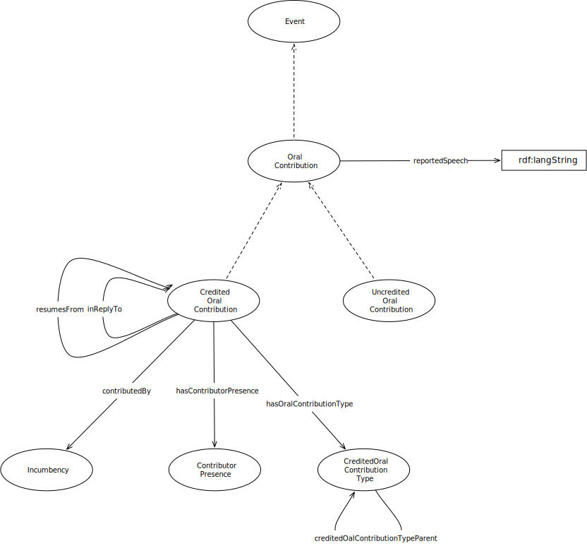

IRI: http://parliament.uk/ontologies/oral-contribution/Action
IRI: http://parliament.uk/ontologies/oral-contribution/ContributorPresence
IRI: http://parliament.uk/ontologies/oral-contribution/CreditedOralContribution
IRI: http://parliament.uk/ontologies/oral-contribution/Event
IRI: http://parliament.uk/ontologies/oral-contribution/Incumbency
IRI: http://parliament.uk/ontologies/oral-contribution/OralContribution
IRI: http://parliament.uk/ontologies/oral-contribution/OralContributionType
IRI: http://parliament.uk/ontologies/oral-contribution/UncreditedOralContribution
IRI: http://parliament.uk/ontologies/oral-contribution/contributedBy
IRI: http://parliament.uk/ontologies/oral-contribution/hasContributorPresence
IRI: http://parliament.uk/ontologies/oral-contribution/hasOralContributionType
IRI: http://parliament.uk/ontologies/oral-contribution/inReplyTo
IRI: http://parliament.uk/ontologies/oral-contribution/oralContributionTypeParent
IRI: http://parliament.uk/ontologies/oral-contribution/resumesFrom
IRI: http://parliament.uk/ontologies/oral-contribution/reportedAction
IRI: http://parliament.uk/ontologies/oral-contribution/reportedSpeech
This HTML document was obtained by processing the OWL ontology source code through LODE, Live OWL Documentation Environment, developed by Silvio Peroni.